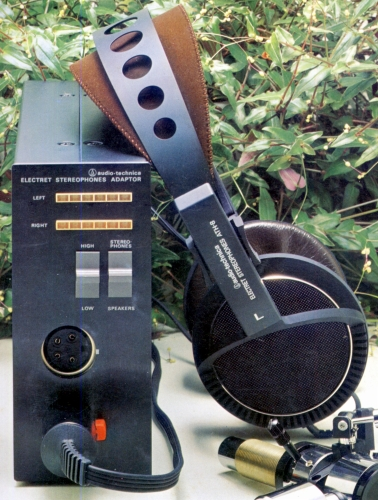
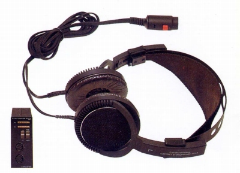
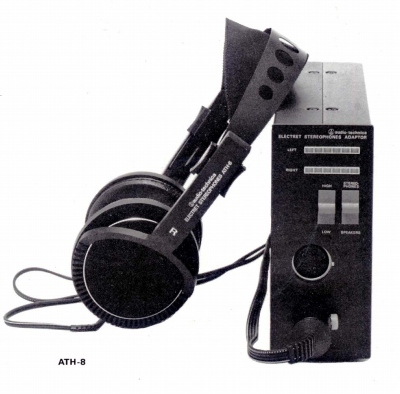
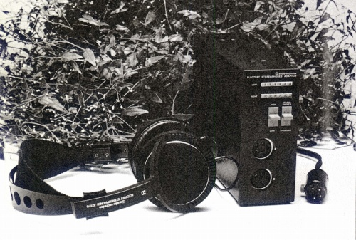
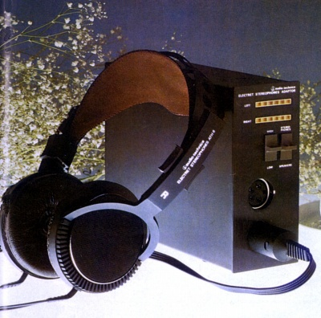

ATH-8





■価格 34,000円
■型式 エレクトレットスタティック型オープンエアタイプ
■振動板 2ミクロン
■インピーダンス
■再生周波数帯域 10-32,000Hz
■許容入力 1,200Vrms
■感度
■コード 2.5ｍＹ形特殊コード
■重量 210g（コード含まず） アダプター1,820ｇ
■発売 1978年
■販売終了 1983年頃
■備考 アダプター昇圧比 HIDH
36dB LOW 30dB
アダプター外寸（�o） 140×60×220